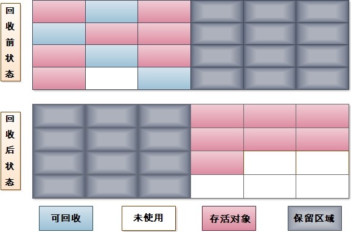
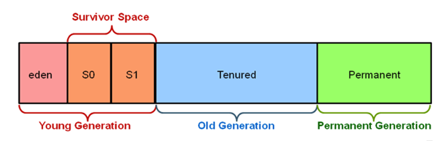
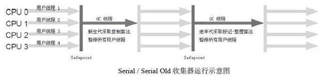
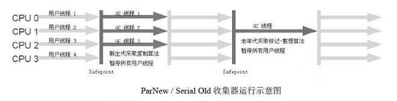

这篇我们主要围绕三点来考虑与Java垃圾回收相关的话题：
- 哪些内存需要回收
- 什么时候回收
- 如何回收
哪些内存需要回收？
上篇文章我们介绍了：Java的运行时内存区域的各个部分。
其中程序计数器、虚拟机栈、本地方法栈三个区域是线程私有的，随线程而生，随线程而灭。因此这几个区域的内存分配和回收都相对有确定性，随着方法结束活着线程结束，内存自然就回收了。
但Java堆和方法区不一样，我们只有程序处于运行时，才知道会创建哪些对象，这部分内存的分配和回收都是动态的。垃圾收集器关心的内存就是这一部分，后文中我们讨论的内存分配和回收都是指这部分内存。
什么时候回收？
简单来说，当对象已经“死了”，即不可能再被任何途径使用的对象，就需要将其回收。那么问题就转化为：如何判断一个对象已经“死了”？
引用计数法
引用计数法很简单：给对象添加一个引用计数器，每当有一个地方引用它时，计数器加1；当引用失效时，计数器减1。任何时候，当计数器为0时，这个对象就不可能再被使用了，可以认为这个对象死了。
这个算法实现很简单，判定效率也高。但是Java中没有选择引用计数法来管理内存，原因就是引用计数法难以解决对象相互循环引用的问题。
根搜索算法
主流的商用程序语言中，都是用根搜索算法判断对象是否存活的。这个算法基本的思路就是通过一系列名为”GC Root”的对象作为起始点，从这些节点开始向下搜索，搜索走过的路径称为“引用链”。当一个对象没有任何引用链相连时，则证明该对象是不可达的，所以它们被判定为可回收的对象。
在Java中，被认为是“GC Root”的对象包括下面几种：
- 虚拟机栈中引用的对象
- 方法区中类静态属性引用的对象
- 方法区中常量引用的对象
- 本地方法栈中引用的对象
如何回收？
这部分我们简单介绍一下垃圾收集的算法思想，垃圾收集器的一些实现方案以及内存分配和回收的一些策略。
垃圾收集算法
标记-清除算法
最基础的就是标记-清除算法。如它的名字一样，整个过程分为两个阶段：“标记”和“清除”。首先标记出所有的需要回收的对象，再标记完成后再统一回收掉所有被标记的对象。标记的过程就是上一部分我们介绍的判断对象是否已经“死了”的算法。

它的主要问题有两个：
- 第一个是效率问题，标记和清除过程的效率都不高；
- 第二个是空间问题，标记清楚之后会产生大量不连续的碎片，内存空间碎片太多可能会导致，后面虚拟机在运行过程中，想要分配较大内存时由于找不到足够的连续空间而导致不得不触发一次新的垃圾回收动作。
复制算法
为了解决标记-清楚算法的效率问题，我们来讨论一下复制算法。它将可用内存分为大小相等的两块，每次只用其中一块，当这一块内存用完了，就将还活着的对象复制到另一块上面去，然后再将已经使用的这块内存一次性全部清除。这样子就不用再考虑碎片的问题了，但是这样做带来一个新的问题，就是将可用内存变为了原先的一半，代价相当高。

现在的商用虚拟机基本都采用这个算法来回收新生代。有专门的研究表明，新生代中的对象有98%都是朝生夕死的，所以完全没有必要将内存按照1:1分为两个相等大小的部分。在Sun HotSpot中，默认将新生代分为一个Eden块和两个Survivor块，大小比例为8:1:1。一次使用一个Eden块和一个Survivor块，新分配的对象默认进入Eden块，当Eden块不够分配时，触发一次垃圾回收动作，将Eden块和目前使用的Survivor块里还存活的对象复制到另一块Survivor中，并把Eden块和之前使用的Survivor块清空。这样的设计使得内存的使用率可以到达90%，在某一时刻，就一块Survivor内存（10%）不能直接用来分配对象。
当然98%的对象朝生夕死只是一个理论值，我们不能保证10%空间的一个Survivor块绝对可以容下这一次垃圾回收中所有的存活对象。当一个Survivor块不够用时，需要依赖其他的内存进行分配担保。关于分配担保的细节，我们在后面进一步说明。
标记-整理算法
复制算法在对象存活率比较高时就要进行比较多的复制操作，造成效率较低。更关键的是，如果不想造成50%的空间浪费，就需要有额外的空间进行分配担保，以应对对象存活率比较高，一个Survivor块不能容下所有存活对象的情况。所以在老年代，我们一般不使用这种算法。
根据老年代的特点，提出了标记-整理这种算法。它与标记-清除算法的区别就在于第二步骤不是将可回收对象直接回收，而是让所有存活对象向一端移动，然后直接清理掉端以外的内存。

分代收集算法
当前商业虚拟机都采用分代收集算法。这个算法是对前面几种的补充，根据内存对象的存活周期不同将内存化为几部分，根据不同部分对象存活周期的特点选择最适当的垃圾回收算法。例如Java虚拟机是把Java堆分为新生代和老年代：在新生代，每次垃圾回收都会发现大量对象需要被回收，那就选用复制算法，只需要付出少量存活对象复制的成本就可以完成垃圾回收；而老年代，对象存活时间比较长，也没有额外空间可以提供给其进行分配担保，就必须使用标记-清除或者标记-整理算法来进行垃圾回收。

垃圾收集器
这里我们讨论如下图中所示的垃圾收集器

有的垃圾收集器适用于新生代，有的垃圾收集器适用于老生代，两个收集器之间有连线，就意味着它们可以搭配使用。这里没有最好的垃圾收集器，更没有万能的垃圾收集器，我们在此对它们进行比较，是为了我们在合适的场景下选择合适的垃圾收集器。
Serial收集器
Serial收集器是最基本、发展历史最悠久的收集器，在JDK1.3之前，它是新生代收集器的唯一选择。它有两个特点：
- 它仅仅使用单线程进行垃圾回收
- 它独占式的垃圾回收
在Serial收集器工作时，必须暂停其他所有的工作线程，直到它收集结束，这个过程有个专业的说法：Stop The World.当然这种做法会带来很不好的体验，但是想想也是合乎情理的。当你的妈妈打扫你的房间时，肯定也会要求你老老实实的呆着或者出去，如果你一边制造垃圾，你妈妈一边打扫卫生，这是一个多么明显的矛盾啊。

ParNew收集器
ParNew收集器就是Serial收集器的多线程版本，除了使用多条线程进行垃圾收集意外以外，与Serial收集器没有什么区别。使用它作为新生代的收集器的一个好处在于：只有它和Serial收集器可以和CMS收集器搭配使用。CMS收集器是作用在年老代的一款优秀的收集器，后面我们再具体介绍。

虽然ParNew收集器与Serial收集器相比，使用多条线程来进行垃圾收集，但是在单CPU环境中，它不会获得比Serial收集器更好的效率。甚至由于线程交互的开销，在两个CPU的环境中，它也不能比Serial收集器更好的效率。但是随着可以使用的CPU数量的增加，它的效率提升还是比较明显的。
Parallel Scavenge收集器
Parallel Scavenge收集器与ParNew收集器一样，也是一个工作在新生代的收集器，也使用复制算法，也使用多条线程进行垃圾收集。但是其他的收集器关注的都是尽可能缩短垃圾回收时系统暂停的时间，它关注的是达到一个可控制的吞吐量。
这里我们来定义一下吞吐量的概念：所谓吞吐量就是CPU运行用户代码使用的时间与CPU总消耗时间的比值，即吞吐量 = 运行用户代码的时间 / (运行用户代码的时间 + 垃圾收集时间)。虚拟机总共运行了100分钟，其中垃圾回收用了1分钟，那吞吐量就是99%。
乍一看，和其他收集器主要为乐尽可能缩短垃圾回收时系统的暂停时间没什么区别，这里举一个例子说明。例如现在新生代内存是500M，你将其调整为300M。之前500M的新生代内存，10秒收集一次，一次耗时100毫秒，现在改为300M后，5秒收集一次，一次耗时70毫秒。停顿的时间是在下降，但同时吞吐量也降下来了。
Parallel Scavenge收集器有一个参数-XX:+UseAdaptiveSizePolicy。当这个参数打开之后，就不需要手工指定新生代的大小、Eden与Survivor区的比例、晋升老年代对象年龄等细节参数了，虚拟机会根据当前系统的运行情况收集性能监控信息，动态调整这些参数以提供最合适的停顿时间或者最大的吞吐量，这种调节方式称为GC自适应的调节策略（GC Ergonomics）。
Serial Old收集器
Serial Old是Serial收集器的老年代版本，它同样是一个单线程收集器，使用标记－整理算法。它的一个重要作用就是：作为CMS收集器的后备预案，在CMS收集器发生Concurrent Mode Failure时使用。
Parallel Old收集器
Parallel Old是Parallel Scavenge收集器的老年代版本，使用多线程和“标记－整理”算法。
这个收集器是在JDK 1.6中才开始提供的，在此之前，新生代的Parallel Scavenge收集器一直处于比较尴尬的状态。原因是，如果新生代选择了Parallel Scavenge收集器，老年代除了Serial Old收集器外别无选择（Parallel Scavenge收集器无法与CMS收集器配合工作）。由于老年代Serial Old收集器在服务端应用性能上的“拖累”，使用了Parallel Scavenge收集器也未必能在整体应用上获得吞吐量最大化的效果，由于单线程的老年代收集中无法充分利用服务器多CPU的处理能力，在老年代很大而且硬件比较高级的环境中，这种组合的吞吐量甚至还不一定有ParNew加CMS的组合“给力”。直到Parallel Old收集器出现后，“吞吐量优先”收集器终于有了比较名副其实的应用组合。
CMS收集器
CMS收集器是一种以获取最短停顿时间为目标的收集器。目前很大一部分Java应用都集中在互联网网站或者B/S系统的服务端，这类应用尤其关注服务的响应速度，希望系统停顿时间较短，以获得较好的体验。
CMS收集器是基于“标记-清除”算法实现的，但他将整个过程分为4个步骤：
- 初始标记
- 并发标记
- 重新标记
- 并发清除
四个步骤中，只有第一步和第三步：初始标记和重新标记阶段需要Stop The World.
初始标记只标记一下GC Root直接引用的对象，速度非常快。并发标记阶段就是根据上阶段得到的GC ROOT直接引用的对象遍历所有存活对象。重新标记阶段是为了修正并发标记期间，因程序继续运作而导致标记产生变动的那部分对象的标记记录，这个阶段停顿时间一般比初始阶段要长，但远短于并发标记阶段。
整个过程中，最耗时的步骤是并发标记和并发清除阶段，但是这两个阶段都可以和工作线程并发的执行。

CMS是一款优秀的收集器，它有并发收集、低停顿的优点。但是它也有一些显著的缺点：
- CMS收集器对CPU资源非常敏感
其实，面向并发设计的程序都对CPU资源比较敏感。在并发阶段，它虽然不会导致用户线程停顿，但是会因为占用了一部分线程（或者说CPU资源）而导致应用程序变慢，总吞吐量会降低。
CMS默认启动的回收线程数是（CPU数量+3）/ 4，也就是当CPU在4个以上时，并发回收时垃圾收集线程不少于25%的CPU资源，并且随着CPU数量的增加而下降。但是当CPU不足4个（譬如2个）时，CMS对用户程序的影响就可能变得很大。
- CMS收集器无法处理浮动垃圾
CMS收集器无法处理浮动垃圾，可能出现“Concurrent Mode Failure”失败而导致另一次Full GC的产生。
由于CMS并发清理阶段用户线程还在运行着，伴随程序运行自然就还会有新的垃圾不断产生，这一部分垃圾出现在标记过程之后，CMS无法在当次收集中处理掉它们，只好留待下一次GC时再清理掉。这一部分垃圾就称为“浮动垃圾”。
也是由于在垃圾收集阶段用户线程还需要运行，那也就还需要预留有足够的内存空间给用户线程使用，因此CMS收集器不能像其他收集器那样等到老年代几乎完全被填满了再进行收集，需要预留一部分空间提供并发收集时的程序运作使用。要是CMS运行期间预留的内存无法满足程序需要，就会出现一次“Concurrent Mode Failure”失败，这时虚拟机将启动后备预案：临时启用Serial Old收集器来重新进行老年代的垃圾收集，这样停顿时间就很长了。
- CMS收集器会产生大量空间碎片
CMS是一款基于“标记—清除”算法实现的收集器，这意味着收集结束时会有大量空间碎片产生。
空间碎片过多时，将会给大对象分配带来很大麻烦，往往会出现老年代还有很大空间剩余，但是无法找到足够大的连续空间来分配当前对象，不得不提前触发一次Full GC。
G1收集器
G1收集器与CMS收集器相比，有两个显著的改进：
- G1收集器是基于“标记-整理”算法的，也就是说它不会产生空间碎片，这对于上时间运行的程序来说很重要。
- 它可以非常精确的控制停顿，即可以让使用者明确指定一个长度为M毫秒的时间片段内，消耗在垃圾收集上的时间不超过N毫秒。
G1收集器可以实现在基本不牺牲吞吐量的前提下完成低停顿的垃圾收集，这是因为它能尽全力避免全区域的垃圾收集，而之前的垃圾收集器的工作范围都是整个新生代或老年代。G1将整个Java堆（包括新生代、老生代）划分为多个大小固定的独立区域，并且跟踪这些区域里面的垃圾堆积程度，在后台维护一个优先级列表，每次根据允许的时间，优先回收垃圾最多的区域。区域划分以及有优先级的区域回收，保证了G1收集器在有限的时间内获得最高的回收效率。
内存分配与回收策略
之前一直介绍的都是对已经分配的内存的回收，下面再简单介绍一些内存分配的策略
对象优先在Eden区域分配
大多数情况下，对象在新生代Eden区中分配，当Eden区没有足够的空间进行分配时，虚拟机将发起一次Minor GC。Minor GC时，如果一个Survivor块不能容下本次所有的存活对象，就需要通过分配担保机制，提前将存活对象移到老年代去。
大对象直接进入老年代
所谓大对象就是指，需要大量连续内存空间的Java对象，比较典型的是：长度很长的字符串和数组。
虚拟机提供了一个-XX:PretenureSizeThreshold参数，令大于这个设置值的对象直接在老年代中分配。这样做的目的是避免在Eden和两个Survivor区之间发生大量的内存拷贝。
长期存活的对象将进入老年代
虚拟机采用了分代收集的思想来管理内存，那内存回收时就必须能识别哪些对象应当放在新生代，哪些对象应当放在老生代。虚拟机给每个对象定义了一个对象年龄计数器，如果对象在Eden出生并经历过第一次Minor GC后仍然存活，并且Survivor块能容下的，将被移动到Survivor中，对象年龄设为1.后面每经历一次Minor GC,对象年龄都会加1。当它的年龄增加到一定时（默认是15），就会被晋升到老年代中。
对象晋升到老年代中的年龄阈值，可以通过参数-XX:MaxTenuringThreshold来设置。
动态对象年龄判定
为了能更好的适应不同程序的内存状况，虚拟机并不总是要求对象的年龄必须达到MaxTenuringThreshold才能晋升老年代。如果在Survivor中相同年龄所有对象大小的总和大于Survivor空间的一半，年龄大于或等于该年龄的对象就可以进入老年代。
空间分配担保
发生Minor GC时，虚拟机会检测之前每次晋升到老年代的平均大小是否大于老年代的剩余空间大小，如果大于，则改为直接进行一次Full GC；如果小于，查看HandlePromotionFailure设置是否允许担保失败，如果允许，那只会进行Minor GC, 如果不允许，则也要改为进行一次Full GC.